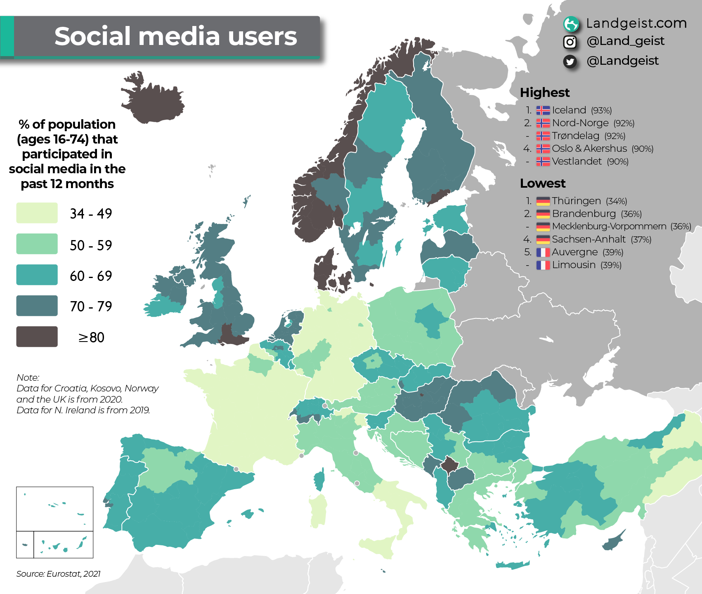
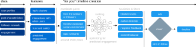

Micro-Degree Artificial Intelligence and Society
– Technical Aspects of AI –
Lecture 4.6: The Recommender System of X


Social Media
- Large parts of the population in the EU use social media.
- Among 16-24 year olds, the proportion is already 74%.
- On a platform like X (formerly "Twitter"), about 500 million posts are created daily.
- However, a typical user only sees a few hundred of them.
- → All major social media platforms have complex recommender systems.

Source: Landgeist.com.
The Recommender System of X
Tasks of the recommender system
- To select posts that are relevant to the user.
- To arrange posts in a timeline – the most relevant first.
- To detect illegal content and keep it out of users' timelines...
Sources of information
- Information about users such as their profile and stated interests.
- Information about posts such as topic, multimedia content, and links.
- Information about the community such as which other users a user follows, and which posts these users interacted with.
- Information about user behavior such as which posts users liked, shared, or replied to in the past (engagement) → optimization goal.
From Data to Recommendations

- Text data is embedded to process it into features.
- Using the features, the cosine similarity to content & users the user had interactions with is calculated.
- For the 1500 most similar or "most relevant" posts, a neural network predicts how likely the user is to engage with them.
- After applying filters, the ranked posts are mixed with ads and follow recommendations and delivered as a timeline.
Problems with Optimizing Engagement
Strongly emotionally charged or sensational content (clickbait) excites us and leads us to engage more with it. This leads to ...

- ... extreme views spreading faster and wider [1, 2].
- ... declining social trust and increasing polarization [3].
- ... political literacy decreasing [4].
[1] Lorenz-Spreen et al., A Systematic Review of Worldwide Causal and Correlational Evidence on Digital Media and Democracy, Nat Hum Behav (2021).
[2] Müller & Schwarz, Fanning the Flames of Hate, J Eur Econ Assoc (2023).
[3] Sabatini & Sarracino, Online Social Networks and Trust, Soc Indic Res (2021).
[4] Lee, Connecting Social Media Use with Gaps in Knowledge and Participation in a Protest Context, Asian J Commun, (2019).
Reducing Societal Risks
Providers [...] shall diligently identify [...] any actual or foreseeable negative effects on civic discourse and electoral processes, and public security [...]
Digital Services Act, Article 34

Idea: New recommendation algorithms that not only optimize engagement but also pay attention to other characteristics.
Research project "Designing Social Media Recommendation Algorithms for Societal Good".
Summary
- Social media platforms like X (formerly Twitter) use complex recommender systems based on machine learning techniques to select content.
- These recommender systems optimize user engagement to maximize the platform's advertising revenue.
- Engagement optimization leads to societal problems which are addressed in laws like the Digital Services Act.
Technical Foundations of AI
- Different Forms of Machine Learning
- Supervised Learning
- Unsupervised Learning
- Reinforcement Learning
- Computational Thinking & Mathematical Foundations
- Deconstructing problems so they can be solved by algorithms
- Measures for algorithm performance
- Measures for the distance or similarity of data points
- Data as the Basis of Artificial Intelligence
- Data types (numbers, categories, images, text)
- Problems with data
- Feature engineering and dimensionality reduction
- Applications of Artificial Intelligence
- Classification, Regression, Cluster Analysis, dimensionality reduction.
- Large Language Models (LLMs)
- Recommender Systems
Where does "AI" work (not) well?
- Huge Advances: Optical character recognition, translation, image recognition, ...
→ Perception - Passable Advances: Spam detection, content moderation, detection of financial crimes, ...
→ Automation of decisions - Very Questionable: Prediction of criminal recidivism, prediction of terrorism, prediction of job performance ...
→ Prediction of social characteristics